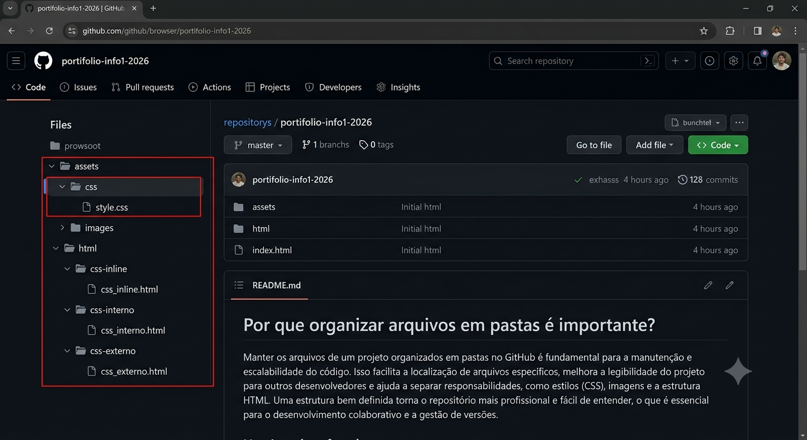

Introdução
Arquitetura de Pastas e Arquivos

Pasta assets: Esta pasta é comumente usada para armazenar recursos estáticos do seu site, como imagens, estilos e outros arquivos. Isso ajuda a manter esses recursos organizados e separados do código-fonte principal.
Pasta css dentro de assets: Esta pasta contém os arquivos de estilo CSS que definem a aparência do seu site. Ao manter os arquivos CSS em uma pasta separada, você facilita a manutenção e o gerenciamento dos estilos.
Arquivo style.css dentro de css: Este é o arquivo de estilo principal que define as regras CSS para todo o seu site. É um local centralizado onde você pode controlar a aparência de todos os elementos HTML.
Pasta html: Esta pasta contém os arquivos HTML que definem a estrutura e o conteúdo das suas páginas da web. Organizar os arquivos HTML em pastas separadas ajuda a manter a estrutura do seu site organizada e fácil de navegar.
Caminhos Relativos no HTML

Tarefa - Meu Portfólio - Parte 1
Tarefa 1 - Configuração do Ambiente e Estrutura das pastas
Criar o repositório portifolio-info1-2026 no GitHub e organizar a estrutura profissional de pastas (/assets, /css, /images).
\

Processo
Configuração do Ambiente e Estrutura de Pastas
- Crie um repositório no GitHub: Nomeie-o como portifolio-info1-2026:
- Acesse o site do GitHub e faça login na sua conta.
- No canto superior direito, clique no botão "+" e selecione "New repository" (Novo repositório).
- No campo Repository name, digite o nome do seu projeto portifolio-info1-2026.
- Deixe a opção de inicialização "Add a README file" marcada.
- Deixa as opções de inialização "Add .gitignore" e "Choose a license" desmarcadas.
- Clique em Create repository.
-
Organize as pastas no seu computador:
- Dentro da pasta do projeto, crie a seguinte estrutura (use sempre letras minúsculas e hífens no lugar de espaços):
- Crie o arquivo "index.html" na raiz (pasta principal) do seu projeto.
- Criar uma pasta chamada "assets": Dentro dela, crie duas subpastas chamadas: "css" e "images".
- Criar uma pasta chamada "html": Dentro dela, crie três subpastas chamadas: "css-inline", "css-interno" e "css-externo" para organizar das tarefas.
- Dentro da pasta chamada "assets/css" crie o arquivo "style.css".
- Dentro da pasta chamada "html/css-inline" crie o arquivo "css_inline.html".
- Dentro da pasta chamada "html/css-interno" crie o arquivo "css_interno.html".
- Dentro da pasta chamada "html/css-externo" crie o arquivo "css_externo.html".
Avaliação
Instruções de Entrega: A atividade deve ser desenvolvida individualmente. Após concluir os desafios das tarefas, envie o link do seu repositório no GitHub através do Google Sala de Aula.
| Critérios | Conceito A (Plena) |
Conceito B (Parcialmente Plena) |
Conceito C (Suficiente) |
Conceito D (Insuficiente) |
|---|---|---|---|---|
| Organização e Nomenclatura | Estrutura profissional: raiz com index.html, pastas /assets/css e /html. Nomes em minúsculas e sem caracteres especiais. | Pastas criadas, mas com pequenos desvios de boas práticas (letras maiúsculas ou espaços) que não impedem os links. | Falta modularidade. CSS externo na mesma pasta do HTML ou ausência da pasta /assets. | Arquivos jogados na raiz sem critério ou pastas principais ausentes. |
Conclusão
Nesta atividade, tivemos a oportunidade de explorar organização de arquivos em pastas lógicas ajuda a encontrar e editar arquivos mais rapidamente, tornando a manutenção do projeto mais eficiente.
Aprendemos que, mostra que uma estrutura de arquivos organizada facilita o trabalho em equipe, pois os desenvolvedores sabem onde encontrar cada tipo de arquivo e como o projeto está estruturado.
Na prática, uma estrutura de pastas clara e intuitiva torna o código mais fácil de entender e navegar, o que é útil para novos desenvolvedores ou quando você revisita o projeto após um tempo.
Muitas plataformas de implantação e ferramentas de automação dependem de uma estrutura de pastas bem definida para compilar e implantar o projeto corretamente.
Bons próximos estudos!